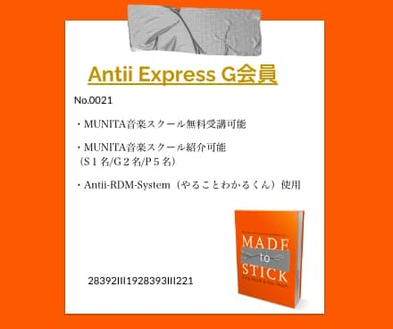

Express加盟者向け無料ギター&音楽レッスン
「感動は"音を通じて"いつまでも続いてく」
（連携事業者/知り合い/及び「その紹介者」）の方のみ受けられる特別なレッスンです。
無料でレッスンが受けられる理由
②主催むにたのリソースが空いてるシーズンにのみ開催します。 無料枠に関しましては前日までにキャンセルになる場合がございます。
③ANTIIの運営するエンタメ系イベントに演奏隊として参加してもらう可能性があります （参加は自由です）
ーよくある質問ー
Ｑ.「無理な営業とかはないですか？講師のレベルは？場所は？」
▫︎ございません。月2回以上受講を希望していただく場合のみ通常のレッスン料金が発生します。
6,600/１コマ
▫︎アップセルのプランはご用意しておりますが無理な営業はございません。ご希望の方のみ追加で受講可能です
▫︎むにたの音楽/ギター講師としてのスキルや実績は「音楽教室以上、都内名門専門学校/音大以下」
くらいの期待値でいてください。
▫︎レッスン開催場所は都内の渋谷〜世田谷内（小田急線内の契約スタジオ）です。場所が変わることもありますが原則都内になります。 詳細は申し込み後の審査に通った受講者様には場所を公式LINEにてお伝えいたします。
▫︎遠方の方は都内（渋谷区エリアや小田急線沿い）に３泊ほど宿泊して観光も兼ねて集中して受講することをおすすめします。
レッスンのコースに関しては3プランからご自身にあったコースを選べます。最初からミドルクラス以上を受講希望の方は審査フォームにて ご自身の「演奏」が聴けるSNSや音源のリンクを貼ってくださいませ。
※初回レッスン時のみ「教材費用」「スタジオ登録料金」「システム利用登録」費用として3,300円かかります。ご了承くださいませ。

3DAYS1の「１」の意味は「3回のレッスンで１つの成果物を作る（行う）」という意味です。
「3回のレッスン」とその間の「自己練習」の中で「形に残る成果物を作る」という行為をおこないます。 それを個人個人のレベルに合わせて1ヶ月おきに売り返すことで。「知る→やってみる→できる→🟢応用できる！（※重要）」
の繰り返しというサイクルができます。こういった音楽との付き合い方をギターを通して行うことで大人になってからも非常に効率的に上達することができます。
初級〜中級者の方は4ステップで簡単な課題曲を通してたった3日でギターの基礎や音楽の仕組みがレベルに応じて理解ができます。 上級者はハーモニーやリズムの復習や「応用できる！」を増やすためにセッションやアイデアの壁打ち相手にむにたを使えます。 予約の取り方はスケジュールをWebでカレンダー形式で開放するのでそこから予約をしていただきます。教習所の予約システムをイメージ していただけるとわかりやすいです。初回レッスン後は次回のレッスン日時をその日に抑えることができるようになります。
🟢「はじめてコース（入門〜初級）」
※日付によって講師が「むにた」ではない可能性があります。（中級/上級コースのプレイヤーが教えます）
課題曲を弾きながら基本的なコードやジャンル別の弾き方、知識を学べます。
入門課題曲：「カントリーロード」「きらきら星」など。※イメージ
初級：課題曲（ご希望のジャンルや弾きたい曲の方向性によって好きな世代に合う曲の中からご提案します）
🟢「Middle Class（中級）」
課題曲を通して「ハーモニー」「リズム」「とくにトライアドやアルペジオを軸とした」ギターのレッスンをおこないます。
ペンタ一発からの脱却、Jロックから入ったけど自分の上手さがわからない、〇〇みたいに弾きたいけどできない/のような方が
マッチします。また弾き語り方面に特化したレッスンも可能です。
課題曲（ご希望のジャンルや弾きたい曲の方向性によってご提案します。）ミドルクラスでは自由曲も対応します。（※むにたが教えられる範囲で）
🟠「Antii class（中級〜上級）」
ミドルクラスを卒業すると受講できます。毎回のレッスンであなたに合わせた課題を出し、音楽を鳴らしたり
RECをしたりしてレビューをおこない音楽力を鍛えていきます。
「テレビやラジオで流れてきた曲をなんとなくならすぐ聴いて弾ける」レベルを目指します。
その後はさまざまな音楽をトランスクライブしながら分析したり「応用して楽しむ」を目指していきます。
課題曲（ご希望のジャンルや弾きたい曲の方向性によってご提案します。）
ジャンル別のブルース/7thコードに対するアプローチ/リズムチェンジ/一発もののソロやバッキング/ビバップアプローチ/
ドミナントモーション/コードの考え方の復習とアイデア/
などをポップスやロックやジャズのあらゆる軸で役に立つ知識やスキルを習得します。
🟠「Antii Master Class」
ミドルクラスを卒業すると受講できます。毎回のレッスンであなたに合わせた課題を出し、音楽を鳴らしたり
RECをしたりしてレビューをおこない音楽力を鍛えていきます。
「テレビやラジオで流れてきた曲をなんとなくならすぐ聴いて弾ける」レベルを目指します。
その後はさまざまな音楽をトランスクライブしながら分析したり「応用して楽しむ」を目指していきます。
課題曲（ご希望のジャンルや弾きたい曲の方向性によってご提案します。）
実際にセッションやイベントに参加する前提でのリハーサルを兼ねた勉強会のようなレッスンをおこないます。
また初級者〜中級者にレッスンを行っていただくための「レッスンのためのレッスン」もおこないます。
現役講師時代に500人以上の生徒を見てきた
むにたが考える「カリキュラム」は確実かつ特別です。
私は母親の影響で２歳よりピアノをしていました。ショパンやチャイコフスキーの音楽に触れ、４歳でコンクールで中四国１位になったり、
学生になって自身でギターを始めてからも叔父がたまたまレコードマニアで田舎の商店街の地下にあるレコード部屋でたくさんの音楽に触れる機会がありました。
そこで聴いていたのはブルース、ロック、ジャズ、ポップス、メタル、歌謡曲、アイドル、ファンクなど。世間はインディーズバンドブーム全盛期。そんな中わたしは
主に60年代初期から2000年代までのありとあらゆる音楽を1日中爆音でレコードで聴いてまともに授業も受けずに学生時代を過ごしました。
学生になってバンドを組むと同時にギターのレッスンを受け始めました。
その後はヤマハの音楽大会でギターの賞を受賞したり、まともに演奏できない10代のころから仕事で楽器を演奏する機会に恵まれたり、
アメリカのボストンにあるバークリー音楽院のプログラムに日本から渡米して参加した際には
ジャズファンクの選抜メンバーに選ばれ、あらゆる世界的な素晴らしいミュージシャンと共演しました。
そして10代の頃から地元のスクールでレッスンをしたりもしました。
メジャーデビューしたいみたいな気持ちは全くなく、地元のプロの人たちのように自分も色んな場所で演奏したり
楽器を教えて暮らしていくんだろうと考えていました。
しかし家族の事情で上京すると話は変わりました。最初は複数の音楽教室とも契約したくさんの生徒さんと関われたり、
入会率や人気投票などで表彰されたりもしました。ジャズクラブでホストバンドをしたり、毎日のように路上でフュージョンを演奏したり、
そんなことがきっかけで大好きなアニメの曲の演奏の仕事が入ったり、憧れのアーティストの後ろで演奏したり。
楽しかったです。しかし数年過ごすと都内の音楽シーンは地元と違うことが身にしみてわかってきます。
山手線の内側で生まれた大金持ちの息子娘たちとの
枠を争う戦いが待っていたのです。彼らは当たり前に楽器が上手く、新しいサウンドに敏感で、そして収入のキャッシュポイントをいくらでも後ろにずらせます。
さらにはなぜか月収20万以下で都内の高層マンションに住んでいるような人がたくさんいました。
このころに考えてたことは最近はSNSで当たり前のように語られている文脈ではありますが、
リアルな当事者の意見としてまたブログにでも書こうと思います。
どちらにせと私にとっては社会と初めて対峙した瞬間であり、同時に自分がそこまで音楽が好きなわけではなく
自分を形成しているものの中に当たり前にあるもの、あるいは良くも悪くも依存した自分の肩書きのようなものに見えてきた時期でした。
そして色々と考えることもあり、若気の自信満々だった私は２０代半ばで今の妻と出会い音楽をキッパリやめてとあるIT系の企業に入社しました。
エンジニアで入社予定が入社後の研修でベラベラ口から出まかせをしゃべっていたのが役員に聞かれたのがきっかけで入った部署は
「データサイエンス事業部」でした。
気づけば大企業向けにDXやBIツールの導入支援という形で頭脳労働や調整業務のBtoB特有のコミュニケーションを通じて傭兵をするような毎日
「ITコンサルタント」をしていました。今までとは真逆のお仕事です。
とても辛かったけど満員電車で毎日仕事場に行って、明け方まで資料を作って、上司に何回もダメ出しをくらって、
レビューされて詰められて、ストレスフルで必死でした。寝れない日もたくさんありました。でも生きるために必死でした。
そして「あーもう無理だ」となって独立、個人事業をはじめ今までの仕事のコネをたどり事業が上手くいったと思い始めたのも束の間、
ある日考え事をして歩いていると私は倒れました。急病で緊急オペと入院。生死を彷徨い退院後も上手く生活できず、何もやる気が起きず。1年間ほど人生の休憩期間を過ごしました。
振り返るとこの20代後半の時期には後悔と同時に「自身の異常なまでの成長」を感じました。
ここで「物事を構造的に考える、相手にとっての２軸で伝える、目的を明確にして教育やサポートをする」などの基礎スキルが磨かれました。
それが私の元々の思想や性格と合わさり人間としても大きな変化を遂げた時期でした。そして20代前半の音楽漬けで過ごしていた日々に反省と後悔
が生まれているのに気がつきました。「今の自分があのときにいればこうしていたのに〜」「あの人を苦しめる必要はなかったのに」など
過去の自分の選択を悔いたりもしました。しかしこの頃には周りのコミュニティーも変わっており、また経済的にも貧弱になるリスクをとってまで
音楽を毎日やることは選択肢としてなかったです。そして性格的にも「趣味で上手く付き合う」ことができませんでした。
そして30才を過ぎたあと、引っ越しを機にふとギターを触ったとき「あ、すげー下手になったな。頭と手が連動しない。」と思うと同時に
「上手く弾けない」という状況になったことで擬似的に「わかってきたけどできない。なんか違う。初級者のモヤモヤ」に気がづきました。
同時に音楽を演奏する素晴らしさ、大切さを感じました。そして溜まっていた過去の生徒さんからのDMやメールに返信して
事業の合間に趣味がてらレッスンを再スタートしました。そして現在に至ります。正直音楽のレッスンは儲かりません。
しかしおそらく僕が人生でやるべきことの一つなのだと感じています。僕は結婚と同時期に妻に事業の一部を譲渡し、空いた時間で
レッスンのスタイルとカリキュラムの構成に入りました。
そしてカリキュラムを考えていて思ったこと
たとえば私の思う「ギターが弾ける」「音楽が奏でられる」人の定義は 「楽器で頭に浮かんだ音や聴こえてくる音楽をその場で弾いたり応用できる人」ということです。もちろん再現度は低くても良いです。 完璧じゃなくても良いのです。そしてそのレベルは誰でも目指せます。そして何よりそれができると一気に音楽が楽しくなります。 しかしそのためには一般的な音楽教室のレッスンで行う「教えてもらう→やってみる」と「自己練習」の繰り返しでは膨大な時間がかかります。 そこで社会人になってからも「音楽が上手くなる」ギターレッスンを できるようにと試行錯誤してカリキュラムを組みました。次に当たったかべは「コミュニケーション」です。私のカリキュラムを他の講師にやって もらっても「社会人のコミュニケーション」の経験がないと大人相手に効率の良いレッスンはできないことに気がつきました。１人Nさんというとても 素晴らしいギター講師との出会いもありましたが、やはりほとんどの人は一般的な音楽教室のスタンスでレッスンを行おうとします。 私はレッスンと自己練習を掛け合わせてレビューをするスタイル。言い方を変えれば「教える」+「調整/軌道修正する」の２軸でレッスンを行うことを 考えました。